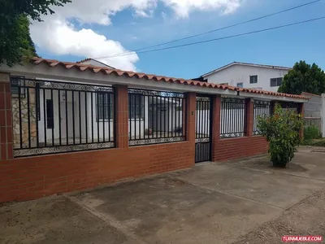
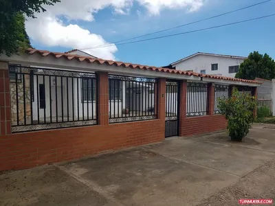

Las mejores casas y al mejor precio del mercado las consigues en mercadolibre
La mejor ropa la consigues en traki

Las mejores casas y al mejor precio del mercado las consigues en mercadolibre
La mejor ropa la consigues en traki
Una criptomoneda, criptodivisa (del inglés cryptocurrency) o criptoactivo es un medio digital de intercambio que utiliza criptografía fuerte para asegurar las transacciones, controlar la creación de unidades adicionales y verificar la transferencia de activos usando tecnologías de registro distribuido. Las criptomonedas son un tipo de divisa alternativa o moneda digital. Existe controversia respecto a que las criptomonedas tienen que ser de control descentralizado o monedas centralizadas por los bancos centrales u otra entidad. El control de cada moneda funciona a través de una base de datos descentralizada, usualmente una cadena de bloques (en inglés blockchain), que sirve como una base de datos de transacciones financieras pública. La primera criptomoneda que empezó a operar fue Bitcoin en 2009,5 y desde entonces han aparecido otras con diferentes características como Litecoin, Ethereum, Bitcoin Cash, Ripple, Dogecoin.
Monero (XMR) es una criptomoneda creada en abril de 2014 que se enfoca en privacidad, descentralización, escalabilidad y fungibilidad. Su primer nombre fue BitMonero y luego se convirtió simplemente en Monero, que en esperanto significa dinero. Es uno de los proyectos de blockchain más importantes en el desarrollo de políticas y tecnologías en pro de la privacidad. De hecho, se caracteriza por ofrecer pagos imposibles de seguir y transacciones sin enlaces entre unas y otras. El precio de XMR ha aumentado en un 405% durante los últimos 12 meses.
Ripple tuvo varios problemas en los meses pasados por la demanda presentada por la SEC, la Comisión de Bolsa y Seguridad de Estados Unidos. La acusación era que Ripple habría vendido ilegalmente tokens XRP que, en realidad, eran valores financieros, por lo que estarían sujetos a otro tipo de regulación. Sin embargo, las cosas ahora parecen haberse aclarado. Ripple nació como una red para cambiar divisas rápidamente. Sin comisiones ni esperas. De momento, el precio del XRP no ha vuelto a los niveles previos a la causa de la SEC, pero sigue siendo una criptomoneda de alto potencial. La peculiaridad de XRP es que las monedas son finitas y, por lo tanto, no hay un proceso de mining.
Litecoin todavía tiene un precio asequible para alguien no experto en el trading de criptomonedas: 248 € en el momento de escribir este artículo. Pero el valor ha crecido casi 100 € solo en el último mes. El mining de Litecoin es extremadamente rápido y la recompensa por bloque es bastante alta (25 LTC). Puede que no sea la criptomoneda con mayor potencial de 2021, pero lo más probable es que sea una de las más estables.
Bitcoin es un protocolo, proyecto de código abierto y red entre iguales que se utiliza como criptomoneda, sistema de pago y mercancía.Fue concebida en 2008 por una entidad conocida bajo el seudónimo de Satoshi Nakamoto, cuya identidad concreta se desconoce. Satoshi trabajó en el código fuente de la aplicación de referencia junto a otros desarrolladores voluntario hasta diciembre de 2010, momento en el que decidió concluir su actividad pública.Su unidad de cuenta tradicional se denomina bitcóin (en plural bitcoines) y se clasifica como moneda digital. Sirve para contabilizar y transferir valor, y cada bitcóin se compone de 100 millones de satoshis, que es la unidad de cuenta mínima.Para llevar el registro de todas las transacciones o «intercambios monetarios» que suceden dentro de Bitcoin, se utiliza una base de datos distribuida. Dicha base de datos almacena la información agrupada en bloques dispersos por la red y encadenados entre sí, formando una estructura de datos conocida con el nombre de «cadena de bloques». Se suele describir a esta cadena de bloques como un libro contable digital, público, distribuido y a prueba de manipulaciones, en el que queda reflejado de forma permanente y verificable el historial de todas las transacciones hechas en la red Bitcoin. Quienes registran las transacciones son los nodos que forman dicha red, y el protocolo Bitcoin define las reglas que gobiernan este sistema. Por el hecho de implementarse dentro de una red compuesta por varios nodos de comunicación entre iguales, donde no existe ningún nodo central susceptible de ser manejado por una organización concreta, se considera que Bitcoin es un sistema descentralizado, no respaldado ni controlado por ningún gobierno o banco central, en el cual se realizan transacciones sin necesidad de intermediarios.
© Todos los derechos reservados :: Empresa Ficticia :: Venezuela 2021